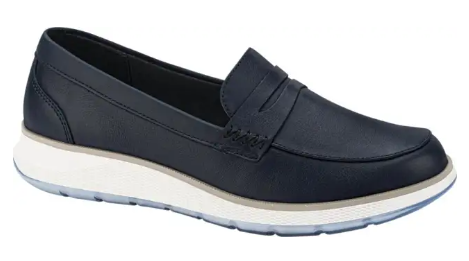

Un choclo es un chanclo de madera o suela gruesa. Por su parte, chanclo viene a ser una especie de sandalia que se pone debajo del calzado y se sujeta por encima del pie con tiras de cuero, y sirve para preservarse de la humedad y del lodo.
Contamos con estos productos:
No. Imagen Tamaños Para 2 19 - 25 Caballero 3 17 - 27 Caballero 4 10 - 18 Dama 5 17 - 20 Dama 6 10 - 24 Dama 7  19 - 22 Dama